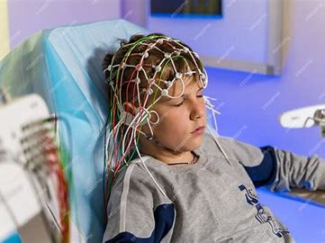
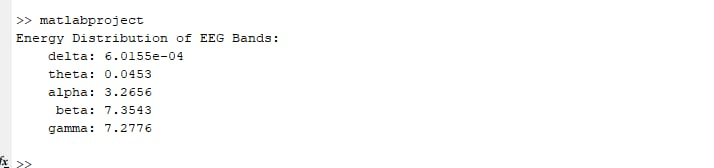
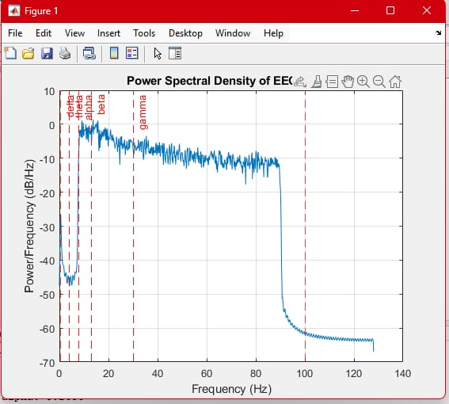

Introduction
This project focuses on detecting and analyzing the distinct types of EEG brain waves—namely delta, theta, alpha, beta, and gamma—by examining their energy distribution using MATLAB. EEG waves represent various states of brain activity, with each wave type associated with specific mental and physical states, such as deep sleep, relaxation, or heightened focus. By using MATLAB's Power Spectral Density (PSD) functions, the project provides a quantitative assessment of the energy within each wave band, offering insights into brain function and potential applications in fields like cognitive science, neurology, and mental health. This analysis can also serve as a foundation for developing brain-computer interfaces or monitoring cognitive states in real-time
Methodology
Detailed explanation of the methodology used, including data preprocessing, MATLAB functions, and PSD calculation.
Code Explanation
% Define the path to the EEG data file
eeg_data_path = 'C:\Users\bibek\Downloads\archive\features_raw.csv'; % Replace with your actual file name
% Load EEG data from the CSV file
eeg_data = readtable(eeg_data_path); % Reads data from a CSV file into a table
% Assuming the EEG signal is in the first column of the table, adjust as needed
eeg_signal = eeg_data{:, 1}; % Extract the first column as the EEG signal
% Define the sampling frequency (Hz)
fs = 256; % Replace with your actual sampling frequency if different
% Parameters for EEG frequency bands
band_limits = struct('delta', [0.5, 4], ...
'theta', [4, 8], ...
'alpha', [8, 13], ...
'beta', [13, 30], ...
'gamma', [30, 100]);
% Preprocess the data (optional filtering)
% Design a bandpass filter to remove noise outside the frequency range of interest (0.5 - 100 Hz)
[b, a] = butter(4, [0.5, 100] / (fs / 2), 'bandpass');
filtered_signal = filtfilt(b, a, eeg_signal);
% Calculate Power Spectral Density using Welch's method
[pxx, f] = pwelch(filtered_signal, [], [], [], fs);
% Initialize energy distribution structure
energy_distribution = struct();
% Calculate energy for each band
for band = fieldnames(band_limits)'
band_name = band{1};
limits = band_limits.(band_name);
% Find indices of the frequency range for the given band
freq_indices = find(f >= limits(1) & f <= limits(2));
% Calculate energy for the band (integrate the PSD over the band)
energy = trapz(f(freq_indices), pxx(freq_indices)); % Area under the PSD curve
energy_distribution.(band_name) = energy;
end
% Display energy distribution for each EEG band
disp('Energy Distribution of EEG Bands:');
disp(energy_distribution);
% Plot the Power Spectral Density
figure;
plot(f, 10*log10(pxx)); % Convert to dB
xlabel('Frequency (Hz)');
ylabel('Power/Frequency (dB/Hz)');
title('Power Spectral Density of EEG Signal');
grid on;
% Highlight EEG bands on the plot
hold on;
for band = fieldnames(band_limits)'
xline(band_limits.(band{1})(1), '--', band{1}, 'Color', 'r');
xline(band_limits.(band{1})(2), '--', 'Color', 'r');
end
hold off;
Results
 Graphs and findings for each waveform. Visuals showing the energy distribution across EEG wave bands.
Conclusion
In the conclusion of this EEG wave detection and energy distribution analysis project, we summarize the key findings, implications, limitations, and suggest potential improvements:
1. Findings: The project successfully detected various EEG wave types—delta, theta, alpha, beta, and gamma—and quantified their energy distributions. This provided insights into brain wave patterns, offering valuable information on brain activity under specific conditions (e.g., relaxation, focus, sleep).
2. Implications: These findings have practical applications in neurology, psychology, and cognitive science. For instance, understanding the energy distribution across different EEG bands can help identify cognitive states, monitor sleep quality, detect neurological disorders, and even study responses to external stimuli.
3. Limitations: One limitation lies in potential signal noise that can interfere with wave detection, as well as limited sample sizes that may affect the generalizability of results. Moreover, the approach relies on MATLAB's Power Spectral Density function, which may have its own constraints regarding resolution and accuracy.
4. Potential Improvements: Future work could improve signal filtering techniques for better noise reduction, explore real-time EEG processing, and apply advanced algorithms like machine learning to classify EEG patterns more accurately. Additionally, expanding the dataset and integrating other software or tools could enhance robustness and applicability.
Overall, this study establishes a foundational approach to EEG wave analysis, highlighting areas for refinement and future research..
References
MATLAB Signal Processing Toolbox Documentation
MATLAB Signal Processing Toolbox
Power Spectral Density in MATLAB
Power Spectral Density in MATLAB
EEG Signal Processing and Analysis (Coursera)
EEG Signal Processing and Analysis by Coursera
MATLAB and Simulink Training
MATLAB Training
MATLAB Central File Exchange
MATLAB Central File Exchange
Signal Processing Stack Exchange
Signal Processing Stack Exchange
IEEE Xplore: Power Spectral Density in EEG
IEEE Xplore: Power Spectral Density in EEG
Survey on EEG Signal Processing (ResearchGate)
Survey on EEG Signal Processing (ResearchGate)
"EEG Signal Processing" by Saeid Sanei and J.A. Chambers
EEG Signal Processing on Elsevier
IEEE Xplore: Frequency Domain EEG Analysis
Frequency Domain EEG Analysis Paper (IEEE Xplore)